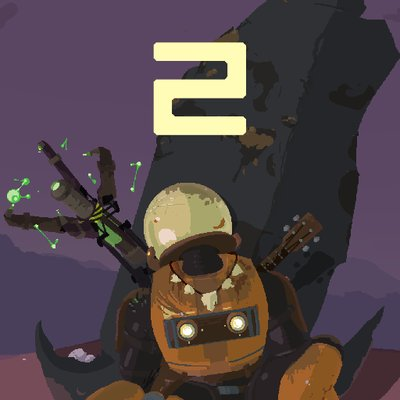
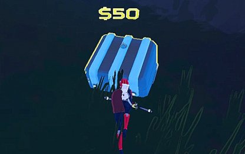

Bienvenue sur mon Guide!
Sur ce guide, vous allait apprendre chaque objets et ennemis du jeu et comment les contrés.
Juste cliquer sur les différends lien dans les onglets déroulants

Présentation du jeu
Risk Of Rain 2 est un jeu roguelike qui met en élément le type de jeu "die and retry" (soit "meur et recommence" en Françai).
Vous allez la plus claire de votre temp combattre une horde infini d'ennemi(e)s de différent type, ayant tous leur propre puissance et défaut
Votre but est de finir une "run" en finissant 2 fois les 3 première zone car quand vous aurez atteint la zone 5, vous allez étre téléporter aux tout début
Le jeu est particuliérement dur et en profitera pour faire apparaitre des mini-boss au passage.
L'argent du jeu
Les piéces d'or se ramasse sur les ennemis tandis que les piéces Lunaire sont un peu plus rare.
L'or permet d'ouvrir des caisses qui renfermeront des Objets de différente raretée:
Blanc pour Commun
Vert pour Rare
Rouge pour Légendaire
Doré pour les Uniques (aussi dit "Artefact")
Bleu pour Lunaire (obtenable uniquement avec les piéces Lunaire)
Les Différend Coffres
Les coffres seront de différent types et tailles selon l'objet qu'ils renferment:
Les petits coffres

Les petits contiendront des objets communs ou rares, plus rarement des légendaires.
Les gros coffres

Les gros coffres contiendront des objets rares et légendaires.
Les coffres dorés

Les coffres doré contiendront obligatoirement des objets légendaires.